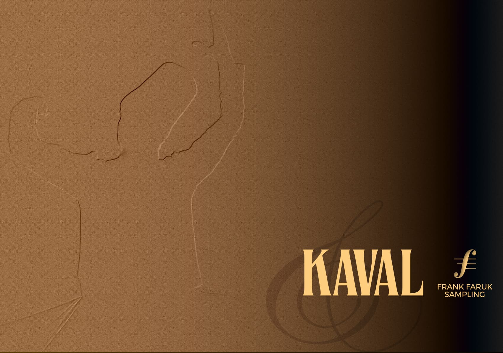

Traditional Sounds Meet Modern Sampling
The kaval, a traditional end-blown flute originating from the Balkans and parts of the Middle East, holds a significant place in the folk music traditions of Bulgaria, Turkey, and Greece. This simple yet expressive instrument, typically made of wood, produces a rich, warm tone capable of conveying a wide range of emotions. Let's delve into the characteristics, cultural significance, and a new virtual instrument offering of this captivating instrument.
The kaval typically measures between 60 to 80 centimeters in length and features six finger holes on the front and one thumb hole on the back. Its conical shape contributes to its distinctive sound.
Known for its rich and warm tone, the kaval is highly expressive and suitable for both solo performances and ensemble accompaniment.
Players produce different pitches by blowing into one end of the instrument and covering/uncovering the finger holes. The kaval's versatility allows for the performance of intricate melodies typical of Balkan music.
The kaval is deeply intertwined with the cultural heritage of the regions where it is played. Often featured in celebrations, rituals, and storytelling, it serves as a symbol of cultural identity for many communities. Beyond its traditional use, the kaval has also found its way into contemporary music genres and fusion styles.
For musicians seeking to incorporate the unique sound of the kaval into their productions, a new virtual instrument for Decent Sampler offers an authentic and versatile experience. This library, created by Frank Faruk Sampling, captures the soulful essence of the kaval with a focus on authentic Turkish Makam scales.
The library offers both standard and microtonal tunings to accurately represent the nuances of Turkish Makam scales. These scales, complex and varied, are presented as presets for ease of use.
The documentation provides visual representations of each Makam (Üssşak, Rast, Suzïnak, and Zirgüleli Hicaz) on a MIDI keyboard, highlighting the notes included in each scale and any necessary microtonal adjustments.
